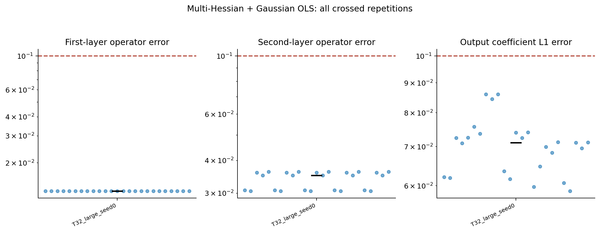
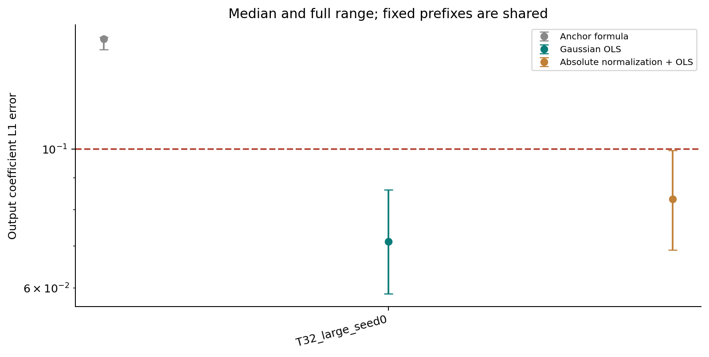
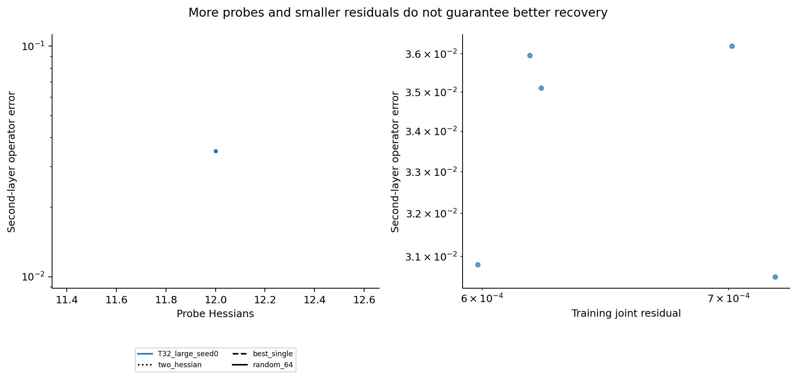
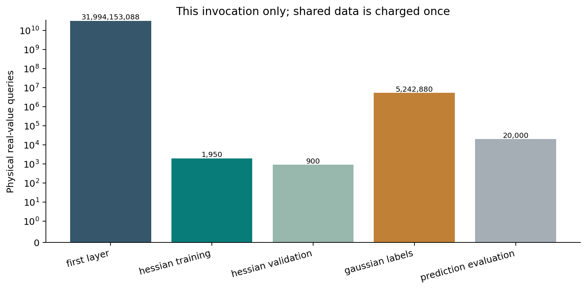

ASPIRE numerical experiments
Column recovery and ASPIRE moments for the first layer; randomized multi-Hessian recovery for the second; standard Gaussian ordinary least squares for the output.
Mode: full; preset: best; 55 records; computation time 3501.31 seconds. Fresh physical queries: 31,999,418,818.
Twenty-five crossed OLS fits share one first-layer estimate: they are not 25 independent network recoveries. Signed normalization can produce negative hidden weights. Passing the numerical threshold does not certify all assumptions of the original theorem.
Group summaries · Download CSV · Configuration, seeds and query accounting
Recovery accuracy

Output regression

Individual runs
Hessian diagnostics

Query accounting

Per-run logical costs include inherited first-layer costs. Do not sum these repeated logical counts across shared runs. Physical invocation costs are recorded separately in the manifest.